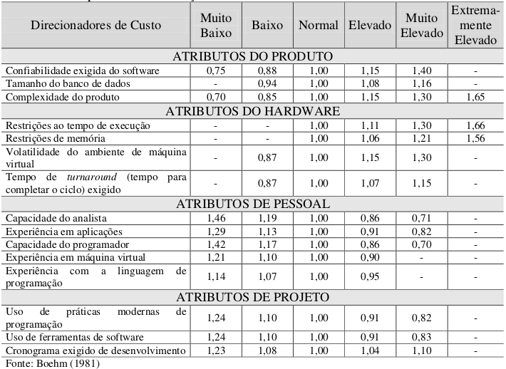
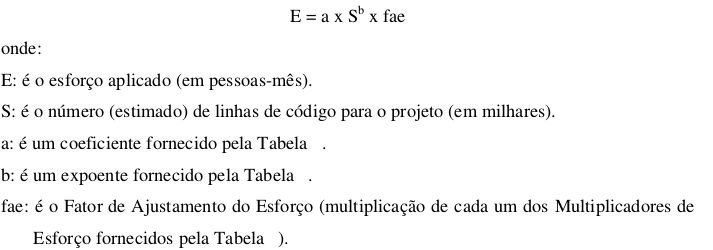
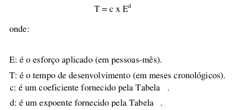

Modelo de Custo Produtivo (COnstructive COst MOdel - COCOMO)
Histórico de revisões
| Data | Versão | Descrição | Autor(es) |
|---|---|---|---|
| 24/03/2019 | 0.1 | Iniciando e elaborando documento | Guilherme Aguiar |
| 24/03/2019 | 0.2 | Ajustes no desenvolvimento e referências | Guilherme Aguiar |
Sumário
1. Introdução
2. Modelo de Custo Produtivo Intermediário
3. Resultados
4. Referencias
1. Introdução
O 'método COCOMO' (ou COnstructive COst MOdel) é um modelo de estimativa do tempo e esforço de desenvolvimento de um software.
COCOMO consiste em três implementações:
- COCOMO Básico (Basic): computa o esforço e o custo de desenvolvimento considerando uma estimativa do tamanho do programa.
- COCOMO Intermediário (Intermediate): computa o esforço e o custo de desenvolvimento considerando uma estimativa do tamanho do programa e um conjunto de direcionadores de custo (avaliações subjetivas do produto, do hardware, do pessoal e dos atributos do projeto).
- COCOMO Detalhado (Detailed): além das características do COCOMO intermediário, inclui uma avaliação do impacto dos direcionadores de custo sobre cada etapa do desenvolvimento.
2. Modelo de Custo Produtivo Intermediário
Este modelo amplia o modelo básico com a finalidadade de levar em consideração um conjunto de atributos direcionadores do custo que são agrupados em quatro categorias:
Atributos do produto
- confiabilidade exigida do software;
- tamanho do banco de dados;
- complexidade do produto.
Atributos do hardware:
- restrições ao tempo de execução;
- restrições de memória;
- volatilidade do ambiente de máquina virtual;
- tempo de turnaround (tempo para completar o ciclo) exigido.
Atributos de pessoal:
- capacidade do analista;
- experiência em aplicações;
- capacidade do programador;
- experiência em máquina virtual;
- experiência com a linguagem de programação.
Atributos de projeto:
- uso de práticas modernas de programação;
- uso de ferramentas de software;
- cronograma exigido de desenvolvimento.
Cada um desses atributos deve ser classificado de acordo com uma escala que varia de “muito baixo” a “extremamente elevado” (em importância e valor).A partir desta classificação determina-se o Multiplicador de Esforço. O produto de todos os resultados de Multiplicadores de Esforços é chamado de Fator de Ajustamento de Esforço Esta escala é apresentada na tabela abaixo:

Cálculo da estimativa de esforço (PESSOAS/MÊS)
Finalmente, para calcular a estimativa do esforço, utilizamos a seguinte equação:

Para Boehm (1981) os valores do coeficiente “a” e do expoente “b” do modelo COCOMO Intermediário são apresentados na tabela abaixo:

Onde:
-
Modo Orgânico: projetos simples, relativamente pequenos, com conjuntos de requisitos não tão rígidos, com equipes pequenas e experientes.
-
Modo Semidestacado: projetos intermediários (em tamanho e complexidade), com alguns requisitos rígidos e outros não tão rígidos, com níveis mistos de experiência nas equipes.
-
Modo Embutido: projetos com conjunto rígido de restrições operacionais, tanto de hardware, quanto de software.
Cálculo da estimativa de tempo (MÊS)
O cálculo para estimativa de tempo utiliza a seguinte equação:

3. Resultados
Estimativa de tamanho
Levando em conta a versão anterior do UniGrade feita na disciplina de Desenvolvimento de Software por alguns integrantes deste grupo, que contou com cerca de 5268 linhas de código, também o provável amadurecimento das habilidades de gerênciamento e desenvolvimento de software da equipe e a adoção de novas técnologias que visam facilitar o desenvolvimento, nossa estimativa inicial do número de linhas de código é de no mínino 4000 linhas de código.
- S = 4000 LoC ou S = 4 KLoC
LoC = Linhas de código
Estimativa de esforço
Substituindo os valores na equação de esforço temos que:
- E = a * S^b * fae
- E = 3 * 4^1,12 * 0,89
- E = 11,76 pessoas/mês
O peso dado aos direcionadores de custo foi o seguinte:

Estimativa de tempo
- T = c * E^d
- T = 2,5 * 11,76 ^0,35
- T = 5,92 meses
4. Referências
[1] Meller, Maristela Corrêa. Modelos Para Estimar Custos De Software: Estudo Comparativo Com Softwares De Pequeno Porte. 2002.
[2] Filho, Antônio M. da Silva, "Estimativa de custo de software: roteiro e dicas para estimativas de projeto". Revista Espaço Acadêmico, nro 156, Maio 2014.
[3] Slides 29, 30 e 31 da aula 02 da disciplina de Arquitetura e Desenho de Software da UnB-Gama - Professora: Milene Serrano